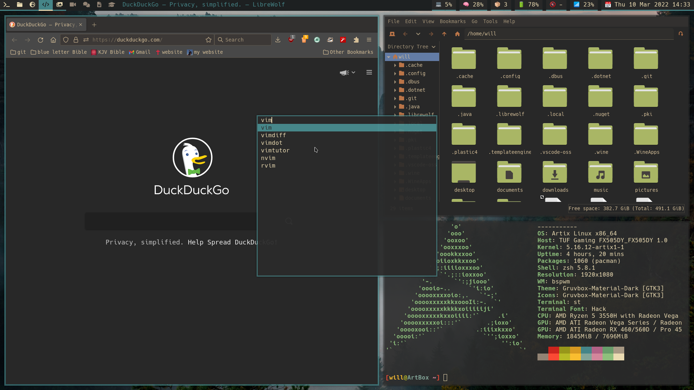

Will Lewis Williams
Hi there, I'm Will, welcome to my website. Here you may find links to my online presence, my contact details, and perhaps blog posts about technologies I am using.
Links
will.lewis.w@gmail.com). LinkedIn
LinkedInProjects
-
- This website
- This website is an example of my general design philosophy. I like simple, minimal, but effective design.
-
- Linux
The software shown in the screenshot below is, from left-to-right, Librewolf, Pcmanfm, neofetch inside st, then dmenu in the centre, and polybar at the top.
- My dotfiles contain most of my program configuration and modifications used on my Linux system. They also contain the shell scripts I use, some of which are made by me, while others are from other members of the open-source community.
-
- Suckless utilities
The suckless utilities are a collection of minimal, fast, and efficient programs written in C and configured by editing the source code.
- dwm is suckless' dynamic window manager for X. My build contains several patches and modifications to suit my workflow.
- The simple terminal, st, is suckless' terminal emulator. I have made a few light patches and customisations to it.
- The programs linked above are smaller tools I use on a regular basis. dmenu is an application launcher, slock is a screen locker, and slstatus is a status monitor I use to put system information in the dwm bar.
{kind=link}
Technologies
Here are some technologies I am currently using: